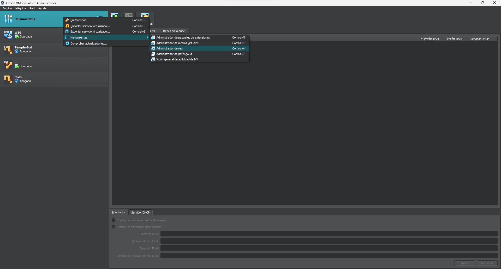
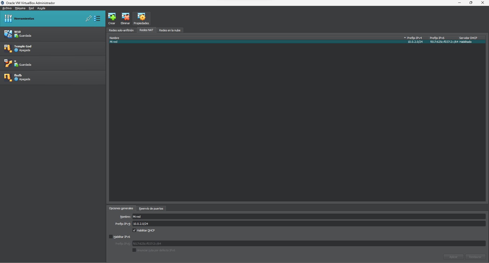

Entrar en la configuracion de Redes de Virtual Box
Dentro de Virtual Box, haremos clic derecho sobre las Herramientas. Se abrira un
desplegable, dentro del despleable posaremos el raton en cima de la opcion Herramientas
y de la nueva ventana desplegable selecionaremos la opcion de administrador de red.

Configuracion de la Red Nat
En la ventana principal de Virtual Box, se nos abrira una nueva secion de redes.
Arriba nos aparecera diferentes pestañas, clicaremos sobre la llamada Redes NAT.
Dentro de esta crearemos una nueva red en la seccion de arriba en el boton llamado Crear.
En la parte de abajo podremos configurar la red.En el nombre pondremos Mi red, y en la ip
10.0.2.0, despues de hacer esto tendremos nuestra red creada.
